O site dedicado a ajudar você a montar o seu PC ideal!
O Diogo é um chatbot avançado treinado para ajudar você a montar o seu PC ideal. Ele utiliza IA - Inteligência arificial para fornecer respostas rápidas e precisas para sanar às suas dúvidas sobre hardware, componentes e montagem de computadores.
Com o Diogo, você pode:
O Diogo está disponível 24/7 para ajudar você a cada etapa do processo de escolha e montagem do seu PC. Basta digitar sua pergunta ou dúvida, e ele estará pronto para ajudar!
Na Hardware Helper, ajudamos qualquer pessoa a montar, escolher ou comprar o seu PC ideal, de forma simples e sem complicações. Nosso assistente virtual DIOGO, está sempre pronto pra te orientar passo a passo - desde a escolha das peças até a configuração final. Seja para estudar, trabalhar ou jogar, queremos que cada setup seja perfeito pra você.
Explore nosso site e descubra dicas, tutoriais e recomendações personalizadas. Estamos aqui para ajudar você a transformar suas ideias em realidade. Com a Hardware Helper, montar o PC dos seus sonhos nunca foi tão fácil! Vamos começar essa jornada juntos!
Montar um PC pode parecer uma tarefa complexa, mas com as ferramentas certas e um pouco de paciência, qualquer pessoa pode realizar esse processo com sucesso. Ter as ferramentas adequadas não só facilita o trabalho, mas também ajuda a evitar danos aos componentes e garante uma montagem mais segura e eficiente. A seguir, listamos as principais ferramentas e itens recomendados para quem deseja montar o próprio computador:
Além das ferramentas, é fundamental preparar o ambiente de trabalho. Escolha uma superfície limpa, plana e espaçosa, de preferência longe de carpetes ou tapetes que acumulam eletricidade estática. Certifique-se de ter espaço suficiente para organizar as peças e ferramentas, e evite comer ou beber próximo aos componentes para não correr o risco de acidentes.
Outro ponto importante é a iluminação: um ambiente bem iluminado facilita a visualização dos detalhes e reduz as chances de erros. Se possível, utilize uma luminária de mesa direcionável.
Por fim, lembre-se de separar todos os componentes antes de começar a montagem, conferindo se não falta nenhuma peça ou acessório. Isso evita interrupções e garante que o processo seja mais tranquilo e organizado.
Com essas ferramentas, cuidados e um ambiente adequado, você estará pronto para montar seu PC com segurança, eficiência e maior tranquilidade. Seguindo as instruções dos manuais e tendo paciência em cada etapa, a experiência de montar o próprio computador pode ser muito gratificante e educativa!
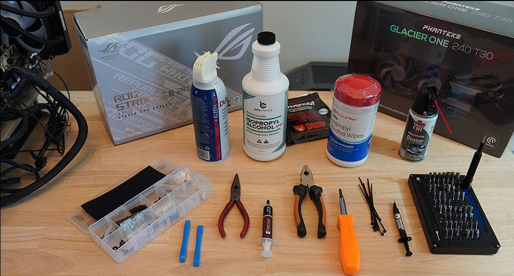1. Prepare o ambiente: Escolha uma superfície limpa e organizada para trabalhar. Certifique-se de estar em um local livre de eletricidade estática.
2. Instale a CPU: Abra o soquete da placa-mãe, alinhe a CPU corretamente e pressione-a suavemente no lugar. Feche o soquete.
3. Instale a memória RAM: Insira os módulos de RAM nos slots apropriados, pressionando firmemente até que as travas se encaixem.
4. Instale o cooler da CPU: Aplique pasta térmica na CPU, posicione o cooler e fixe-o com os parafusos ou clipes fornecidos.
5. Instale a placa-mãe no gabinete: Alinhe a placa-mãe com os espaçadores no gabinete e parafuse-a no lugar.
6. Instale a fonte de alimentação: Posicione a fonte no gabinete e parafuse-a. Conecte os cabos de energia à placa-mãe e outros componentes.
7. Instale a placa de vídeo (se aplicável): Insira a placa de vídeo no slot PCIe da placa-mãe e parafuse-a no lugar.
8. Instale unidades de armazenamento: Conecte SSDs ou HDs aos slots apropriados e conecte os cabos SATA ou NVMe.
9. Conecte os cabos do painel frontal: Ligue os cabos do botão de energia, reset, LEDs e portas USB/Áudio ao conector correspondente na placa-mãe.
10. Organize os cabos: Use fita adesiva ou braçadeiras para organizar os cabos dentro do gabinete, garantindo um fluxo de ar adequado.
11. Verifique todas as conexões: Certifique-se de que todos os cabos e componentes estejam corretamente conectados.
12. Ligue o PC: Conecte o cabo de energia à fonte e ligue o PC. Acesse a BIOS para verificar se todos os componentes foram reconhecidos.
13. Instale o sistema operacional: Use um pendrive ou DVD para instalar o sistema operacional de sua escolha.
14. Instale drivers e atualizações: Após a instalação do sistema operacional, instale os drivers necessários para todos os componentes e verifique se há atualizações.
15. Teste o sistema: Execute testes de desempenho e estabilidade para garantir que tudo esteja funcionando corretamente.
O processador, também conhecido como CPU (Unidade Central de Processamento), é o cérebro do computador. Ele é responsável por executar instruções e processar dados, realizando cálculos e operações lógicas que permitem o funcionamento do sistema operacional e dos aplicativos. A velocidade e a eficiência do processador influenciam diretamente o desempenho geral do computador.
Em resumo, o processador é essencial para o desempenho do computador, afetando a rapidez com que tarefas são realizadas, desde atividades simples como navegação na web até tarefas mais complexas como edição de vídeo e jogos.
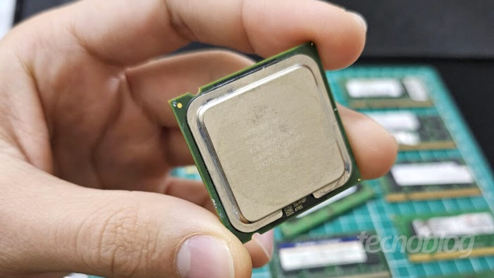Existem vários tipos de processadores, cada um com suas características e aplicações específicas. Os principais tipos incluem:
Além disso, os processadores podem variar em termos de arquitetura (como x86, ARM), número de núcleos (single-core, dual-core, quad-core, etc.) e tecnologias adicionais (como hyper-threading, turbo boost). A escolha do tipo de processador depende das necessidades específicas do usuário e do uso pretendido do computador.
Os processadores mais comuns no mercado atualmente são os da Intel e AMD, cada um oferecendo diferentes linhas e modelos para atender a diversas necessidades, desde uso básico até aplicações de alta performance.
Mais também existem processadores como os da Apple (M1, M2) que são baseados na arquitetura ARM e são conhecidos por sua eficiência energética e desempenho em dispositivos como MacBooks e iPads.
Aqui estão alguns exemplos populares de processadores:
Nesse site iremos falar mais sobre os processadores da Intel e AMD, que são os mais comuns no mercado de computadores pessoais e workstations.
A escolha do processador ideal depende das necessidades específicas do usuário, como o tipo de tarefas que serão realizadas, o orçamento disponível e a compatibilidade com outros componentes do sistema.
Em resumo, os processadores são componentes essenciais que determinam o desempenho e a eficiência de um computador, e a variedade de tipos disponíveis permite que os usuários escolham a melhor opção para suas necessidades específicas.
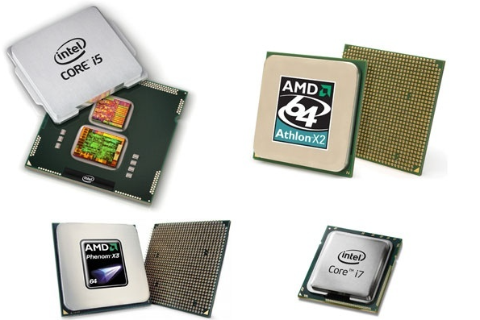A evolução dos processadores ao longo das décadas tem sido marcada por avanços tecnológicos significativos que transformaram a computação. Desde os primeiros processadores de um único núcleo até os modernos chips multi-core e arquiteturas híbridas, essa trajetória reflete a busca constante por maior desempenho, eficiência energética e capacidade de processamento.
Nos anos 70 e 80, os processadores eram relativamente simples, com velocidades de clock baixas e capacidades limitadas. A introdução da arquitetura x86 pela Intel em 1978 estabeleceu um padrão que dominaria o mercado de computadores pessoais por décadas. Já nos anos 90, a competição entre Intel e AMD impulsionou inovações como a elevação de frequência, o aumento de instruções por ciclo e a chegada de recursos como o hyper-threading, que permitia executar múltiplas tarefas em paralelo.
Com o avanço da tecnologia de fabricação, os processadores tornaram-se mais compactos e eficientes. A transição para processos de litografia menores possibilitou o aumento do número de transistores, resultando em chips com múltiplos núcleos e maior capacidade de processamento paralelo. Isso abriu caminho para notebooks mais potentes, servidores robustos e smartphones com desempenho comparável a computadores.
Atualmente, a evolução não se limita apenas à quantidade de núcleos ou velocidade de clock. Tecnologias como arquiteturas híbridas (big.LITTLE), inteligência artificial embarcada, aceleração gráfica integrada e foco em eficiência energética redefinem os limites do que um processador pode oferecer. Hoje, eles são peças centrais não apenas em computadores, mas também em dispositivos móveis, carros inteligentes, consoles de jogos e até eletrodomésticos.
A história dos processadores mostra que a cada salto tecnológico não apenas os computadores ficaram mais rápidos, mas a sociedade como um todo passou a depender cada vez mais dessa evolução para inovar, comunicar e transformar o mundo digital em algo essencial no dia a dia.
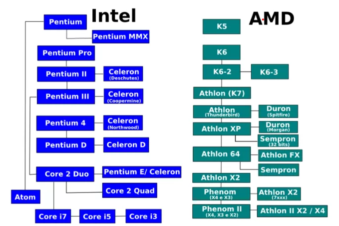A Intel é uma das maiores fabricantes de processadores do mundo, conhecida por sua inovação e desempenho. A linha de processadores Intel inclui várias séries, cada uma projetada para atender a diferentes necessidades:
A Intel também é conhecida por suas tecnologias inovadoras, como o Turbo Boost, que aumenta dinamicamente a velocidade do clock do processador, e o Hyper-Threading, que permite a execução simultânea de múltiplas threads por núcleo. A escolha do processador Intel adequado depende das necessidades específicas do usuário e do uso pretendido do computador.
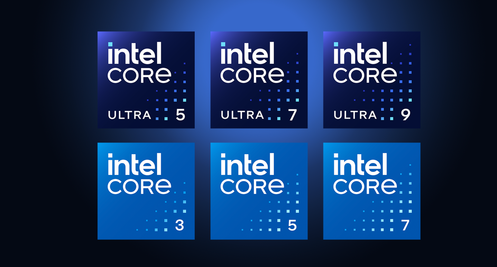A AMD (Advanced Micro Devices) é outra grande fabricante de processadores, conhecida por oferecer alternativas competitivas aos processadores Intel. A linha de processadores AMD inclui várias séries, cada uma projetada para atender a diferentes necessidades:
A AMD é conhecida por suas inovações tecnológicas, como a arquitetura Zen, que trouxe melhorias significativas em desempenho e eficiência energética. Além disso, os processadores AMD frequentemente oferecem mais núcleos e threads por um preço competitivo, tornando-os uma escolha popular entre gamers e profissionais. A escolha do processador AMD adequado depende das necessidades específicas do usuário e do uso pretendido do computador.
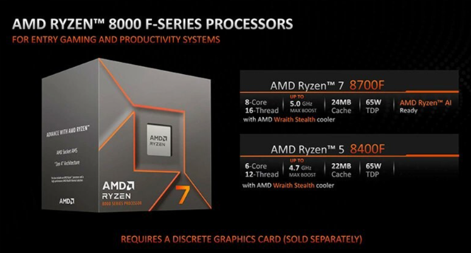A Kabum é uma das maiores lojas online de tecnologia e eletrônicos no Brasil, especializada em hardware para computadores, periféricos, componentes e acessórios. Fundada em 2003, a Kabum rapidamente se tornou uma referência no mercado brasileiro, oferecendo uma ampla variedade de produtos para entusiastas de tecnologia, gamers e profissionais.
A Kabum é conhecida por sua vasta seleção de produtos, incluindo placas de vídeo, processadores, memórias RAM, SSDs, gabinetes, fontes de alimentação, monitores e muito mais. A loja também oferece promoções frequentes, descontos exclusivos e condições especiais de pagamento, tornando-se uma opção atraente para quem busca montar ou atualizar seu computador.
Além disso, a Kabum se destaca pelo atendimento ao cliente, com suporte técnico especializado e políticas de devolução flexíveis. A loja também investe em conteúdo educacional, como reviews de produtos, tutoriais e guias de compra, ajudando os consumidores a tomar decisões informadas.
Com um site intuitivo e fácil de navegar, a Kabum proporciona uma experiência de compra conveniente e segura. A loja oferece diversas opções de entrega, incluindo frete grátis para compras acima de um determinado valor.
Em resumo, a Kabum é uma escolha popular entre os consumidores brasileiros que buscam produtos de tecnologia de alta qualidade a preços competitivos, com um serviço ao cliente confiável e uma ampla gama de opções para atender às suas necessidades tecnológicas.
A Pichau é uma renomada loja online brasileira especializada em hardware para computadores, periféricos, componentes e acessórios. Fundada em 2003, a Pichau rapidamente se destacou no mercado de tecnologia, oferecendo uma ampla variedade de produtos para entusiastas de tecnologia, gamers e profissionais.
A Pichau é conhecida por sua vasta seleção de produtos, incluindo placas de vídeo, processadores, memórias RAM, SSDs, gabinetes, fontes de alimentação, monitores e muito mais. A loja frequentemente oferece promoções exclusivas, descontos especiais e condições facilitadas de pagamento, tornando-se uma opção atraente para quem busca montar ou atualizar seu computador.
Além disso, a Pichau se destaca pelo atendimento ao cliente, com suporte técnico especializado e políticas de devolução flexíveis. A loja também investe em conteúdo educacional, como reviews de produtos, tutoriais e guias de compra, ajudando os consumidores a tomar decisões informadas.
Com um site intuitivo e fácil de navegar, a Pichau proporciona uma experiência de compra conveniente e segura. A loja oferece diversas opções de entrega, incluindo frete grátis para compras acima de um determinado valor.
Em resumo, a Pichau é uma escolha popular entre os consumidores brasileiros que buscam produtos de tecnologia de alta qualidade a preços competitivos, com um serviço ao cliente confiável e uma ampla gama de opções para atender às suas necessidades tecnológicas.
A Amazon é uma das maiores e mais conhecidas lojas online do mundo, oferecendo uma vasta gama de produtos, incluindo eletrônicos, livros, roupas, utensílios domésticos e muito mais. Fundada em 1994 por Jeff Bezos, a Amazon começou como uma livraria online, mas rapidamente expandiu seu catálogo para incluir uma variedade de categorias de produtos.
A Amazon é conhecida por sua conveniência, preços competitivos e ampla seleção de produtos. A plataforma oferece avaliações e comentários de clientes, ajudando os consumidores a tomar decisões informadas sobre suas compras. Além disso, a Amazon investe em tecnologias inovadoras, como inteligência artificial e logística avançada, para melhorar a experiência do cliente.
A Amazon também oferece serviços adicionais, como o Amazon Prime, que proporciona benefícios exclusivos aos membros, incluindo frete grátis em muitos produtos, acesso a streaming de vídeo e música, entre outros. A empresa também possui uma plataforma de marketplace, permitindo que vendedores terceiros ofereçam seus produtos na Amazon.
Com operações em diversos países ao redor do mundo, a Amazon se tornou um gigante do comércio eletrônico, influenciando significativamente a forma como as pessoas compram e consomem produtos. A empresa continua a inovar e expandir seus serviços, consolidando sua posição como líder global no setor de varejo online.
A refrigeração de um computador é essencial para manter os componentes funcionando dentro de temperaturas seguras, garantindo desempenho e longevidade. Existem dois tipos principais de sistemas de refrigeração: a ar e líquida. Cada um tem suas vantagens e desvantagens, e a escolha entre eles depende das necessidades específicas do usuário.
Refrigeração a ar:
Refrigeração líquida:
Em resumo, a escolha entre refrigeração a ar e líquida depende do orçamento, nível de experiência com montagem de PCs, necessidades de desempenho e preferências pessoais. Para usuários comuns ou iniciantes, a refrigeração a ar é geralmente suficiente. Já para entusiastas, gamers ou profissionais que exigem alto desempenho, a refrigeração líquida pode ser uma opção mais adequada.
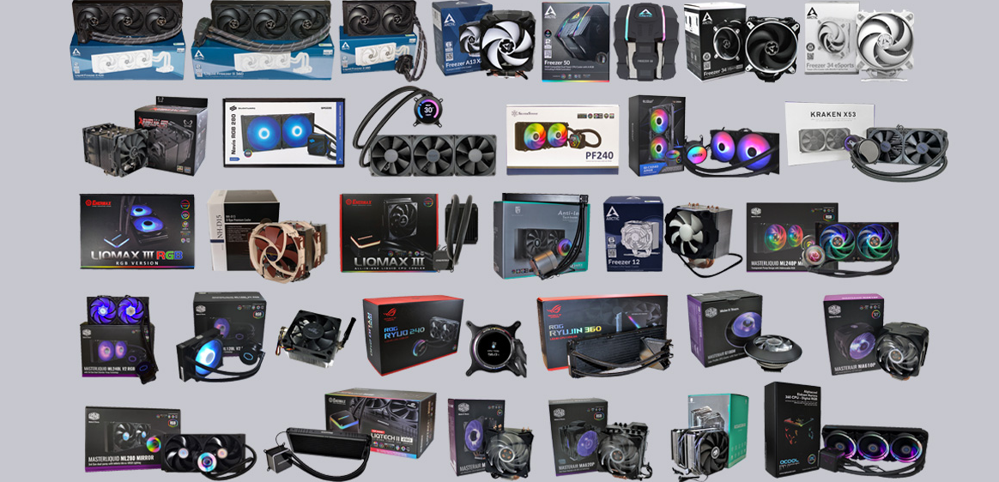Os sistemas de refrigeração são essenciais para manter os componentes do computador em temperaturas seguras, garantindo desempenho e longevidade do sistema. O calor gerado pelos componentes, como a CPU e GPU, pode causar danos se não for adequadamente dissipado. Aqui estão algumas razões pelas quais o uso de sistemas de refrigeração é importante:
1. Prevenção de superaquecimento: Componentes eletrônicos geram calor durante o funcionamento. Sem um sistema de refrigeração eficaz, esse calor pode acumular-se, levando ao superaquecimento, que pode causar falhas ou danos permanentes aos componentes.
2. Manutenção do desempenho: O desempenho dos componentes, especialmente da CPU e GPU, pode ser afetado negativamente pelo calor excessivo. Muitos processadores possuem mecanismos de proteção que reduzem a velocidade de clock quando atingem temperaturas críticas, resultando em queda de desempenho.
3. Longevidade dos componentes: O calor excessivo pode acelerar o desgaste dos componentes eletrônicos, reduzindo sua vida útil. Um sistema de refrigeração eficaz ajuda a manter os componentes em temperaturas ideais, prolongando sua durabilidade.
4. Estabilidade do sistema: Sistemas que operam em temperaturas elevadas podem apresentar instabilidades, como travamentos ou reinicializações inesperadas. A refrigeração adequada ajuda a manter a estabilidade do sistema durante cargas de trabalho intensas.
5. Redução de ruído: Sistemas de refrigeração eficientes podem operar com menos ruído, especialmente em configurações de refrigeração líquida, que tendem a ser mais silenciosas do que os sistemas de refrigeração a ar.
Em resumo, o uso de sistemas de refrigeração é crucial para garantir que os componentes do computador funcionem de maneira eficiente, estável e duradoura. A escolha entre refrigeração a ar ou líquida depende das necessidades específicas do usuário, orçamento e nível de experiência com montagem de PCs.
A refrigeração a ar é o método mais comum e acessível para manter os componentes do computador em temperaturas seguras. Esse sistema utiliza ventiladores para dissipar o calor gerado pelos componentes, como a CPU e GPU. Aqui estão os principais aspectos da refrigeração a ar:
Componentes principais:
Vantagens da refrigeração a ar:
Desvantagens da refrigeração a ar:
Para otimizar a refrigeração a ar, é importante garantir um bom fluxo de ar dentro do gabinete, organizando os cabos e escolhendo ventiladores de qualidade. A limpeza regular dos ventiladores e dissipadores também é essencial para manter a eficiência do sistema.
Em resumo, a refrigeração a ar é uma solução eficaz e acessível para a maioria dos usuários, oferecendo um equilíbrio entre desempenho, custo e facilidade de manutenção. No entanto, para sistemas de alta performance, pode ser necessário considerar alternativas mais avançadas, como a refrigeração líquida.
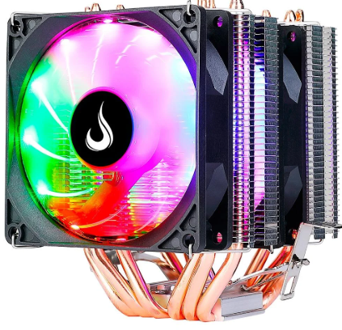A refrigeração líquida é um método avançado de resfriamento utilizado em computadores para manter os componentes, como a CPU e GPU, em temperaturas seguras, especialmente em sistemas de alta performance ou overclocking. Esse sistema utiliza um líquido refrigerante para absorver o calor gerado pelos componentes, que é então dissipado através de radiadores.
Os principais componentes de um sistema de refrigeração líquida incluem:
Vantagens da refrigeração líquida:
Desvantagens da refrigeração líquida:
Para otimizar a refrigeração líquida, é importante escolher componentes de qualidade, garantir uma instalação adequada e realizar manutenção regular para verificar o estado do líquido refrigerante e a integridade do sistema.
Em resumo, a refrigeração líquida é uma solução eficaz para usuários que exigem alto desempenho de seus sistemas, oferecendo vantagens significativas em termos de resfriamento e ruído. No entanto, é essencial considerar os custos, a complexidade de instalação e a necessidade de manutenção ao optar por esse tipo de sistema.
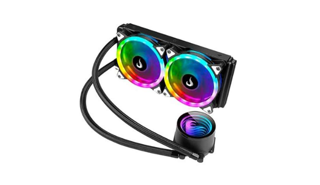Fans, ou ventiladores, são componentes essenciais em sistemas de refrigeração de computadores, responsáveis por promover o fluxo de ar e dissipar o calor gerado pelos componentes internos. Eles desempenham um papel crucial na manutenção de temperaturas seguras, garantindo o desempenho e a longevidade do sistema.
Existem vários tipos de fans utilizados em computadores, cada um com suas características específicas:
A escolha dos fans adequados depende de vários fatores, incluindo o tamanho do gabinete, o nível de ruído desejado e as necessidades de resfriamento do sistema. Ventiladores maiores geralmente movem mais ar com menos ruído, enquanto ventiladores menores podem ser mais barulhentos quando operam em altas velocidades.
Além disso, muitos fans modernos vêm com recursos adicionais, como controle de velocidade, iluminação RGB e designs otimizados para melhorar a eficiência do fluxo de ar. A instalação adequada dos ventiladores e a manutenção regular, como limpeza contra poeira, são essenciais para garantir que eles funcionem de maneira eficaz.
Em resumo, os fans são componentes vitais para a refrigeração de computadores, desempenhando um papel crucial na manutenção do desempenho e da estabilidade do sistema. A escolha e a configuração adequadas dos ventiladores podem fazer uma diferença significativa na eficiência térmica e no conforto acústico do computador.
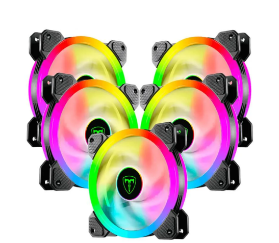Placas de vídeo, também conhecidas como GPUs (Unidades de Processamento Gráfico), são componentes essenciais em computadores responsáveis por renderizar imagens, vídeos e gráficos. Elas desempenham um papel crucial em diversas aplicações, desde jogos até edição de vídeo e design gráfico.
As placas de vídeo funcionam processando grandes quantidades de dados gráficos em paralelo, o que as torna muito mais eficientes do que os processadores tradicionais (CPUs) para tarefas relacionadas a gráficos. Elas possuem sua própria memória dedicada (VRAM) para armazenar texturas, modelos 3D e outros dados gráficos, permitindo um desempenho superior em comparação com soluções integradas.
Existem dois tipos principais de placas de vídeo:
As principais fabricantes de placas de vídeo são NVIDIA e AMD, ambas oferecendo uma ampla gama de modelos para diferentes necessidades e orçamentos. A escolha da placa de vídeo ideal depende do uso pretendido do computador, como jogos, trabalho profissional ou uso geral.
Em resumo, as placas de vídeo são componentes vitais para qualquer sistema que exija processamento gráfico avançado. Elas melhoram significativamente a experiência visual e o desempenho em uma variedade de aplicações, tornando-as indispensáveis para gamers, profissionais criativos e entusiastas de tecnologia em geral.
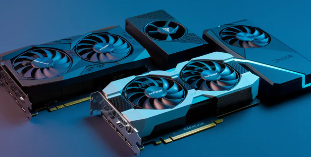A placa-mãe, também conhecida como motherboard ou mainboard, é o componente central de um computador que conecta e permite a comunicação entre todos os outros componentes do sistema. Ela serve como a espinha dorsal do computador, fornecendo conexões físicas e elétricas para a CPU, memória RAM, dispositivos de armazenamento, placas de vídeo, periféricos e outros componentes essenciais.
As placas-mãe são projetadas em diferentes formatos (fatores de forma), como ATX, Micro-ATX e Mini-ITX, cada um com suas próprias dimensões e características. A escolha do fator de forma adequado depende do tamanho do gabinete e das necessidades de expansão do usuário.
Os principais componentes e conectores encontrados em uma placa-mãe incluem:
A escolha da placa-mãe adequada é crucial para garantir a compatibilidade com os outros componentes do sistema e atender às necessidades específicas do usuário, como capacidade de expansão, suporte a tecnologias modernas (como USB-C, Wi-Fi 6) e recursos adicionais (como overclocking).
Em resumo, a placa-mãe é um componente fundamental em qualquer computador, desempenhando um papel vital na interconexão e comunicação entre todos os outros componentes do sistema. A escolha cuidadosa da placa-mãe pode influenciar significativamente o desempenho, a capacidade de expansão e a longevidade do computador.
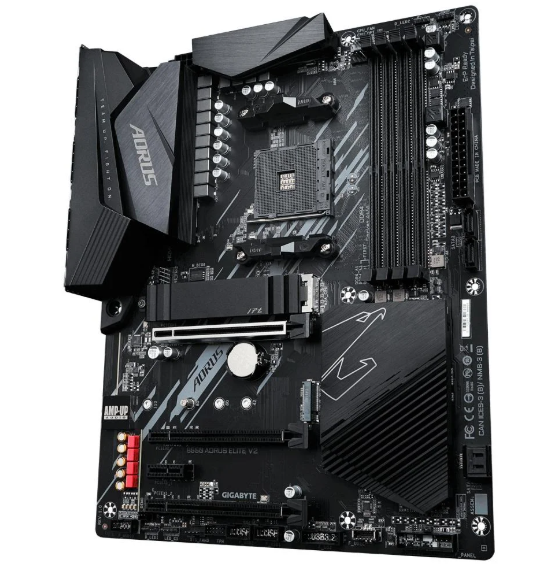A função principal de um monitor é exibir informações visuais geradas pelo computador, permitindo que o usuário interaja com o sistema e visualize conteúdos como textos, imagens, vídeos e gráficos. O monitor atua como uma interface entre o usuário e o computador, traduzindo os dados processados pela CPU e GPU em uma forma compreensível e acessível.
Os monitores são compostos por uma tela que pode variar em tamanho, resolução e tecnologia de exibição. Eles podem ser conectados ao computador através de diferentes tipos de cabos, como HDMI, DisplayPort, DVI ou VGA, dependendo das especificações do monitor e da placa de vídeo.
Além de exibir informações visuais, os monitores também podem oferecer recursos adicionais, como ajuste de brilho e contraste, modos de cor específicos para diferentes tipos de conteúdo (como jogos ou edição de fotos), suporte a múltiplos monitores para aumentar a área de trabalho e tecnologias para reduzir o cansaço visual, como filtros de luz azul.
Em resumo, a função do monitor é proporcionar uma experiência visual clara e eficiente para o usuário, facilitando a interação com o computador e a visualização de conteúdos digitais. A escolha do monitor adequado depende das necessidades específicas do usuário, como uso geral, jogos, trabalho profissional ou edição de mídia.
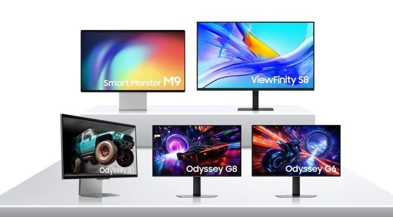Existem vários tipos de monitores disponíveis no mercado, cada um com suas próprias características e tecnologias de exibição. A escolha do tipo de monitor adequado depende das necessidades específicas do usuário, como uso geral, jogos, trabalho profissional ou edição de mídia. Aqui estão alguns dos tipos mais comuns de monitores:
1. Monitores LCD (Liquid Crystal Display):
2. Monitores LED (Light Emitting Diode):
3. Monitores OLED (Organic Light Emitting Diode):
4. Monitores Curvos:
5. Monitores Ultrawide:
Em resumo, a escolha do tipo de monitor depende das preferências pessoais e das necessidades específicas do usuário. Cada tipo de monitor oferece vantagens e desvantagens que devem ser consideradas ao fazer uma escolha informada.
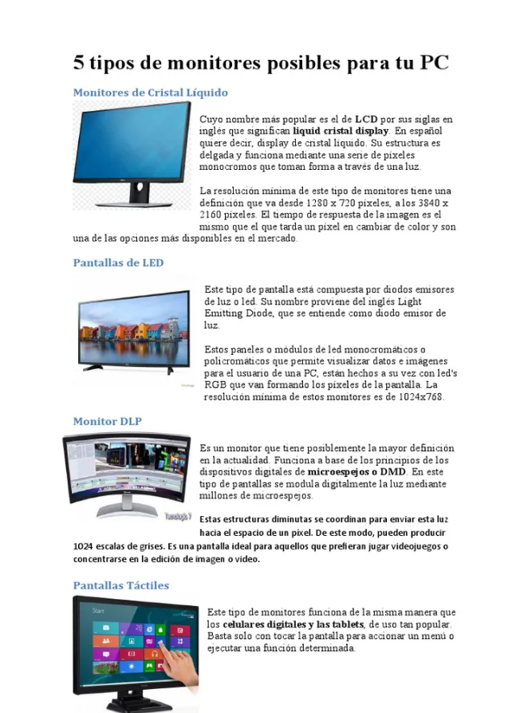Para montar um PC voltado para jogos, é importante escolher peças que ofereçam bom desempenho gráfico, processamento rápido e capacidade de expansão. Veja os principais componentes recomendados:
Lembre-se de sempre verificar a compatibilidade entre os componentes e considerar o tipo de jogos que pretende rodar, ajustando o orçamento conforme suas prioridades (por exemplo, investir mais na placa de vídeo para jogos mais pesados).
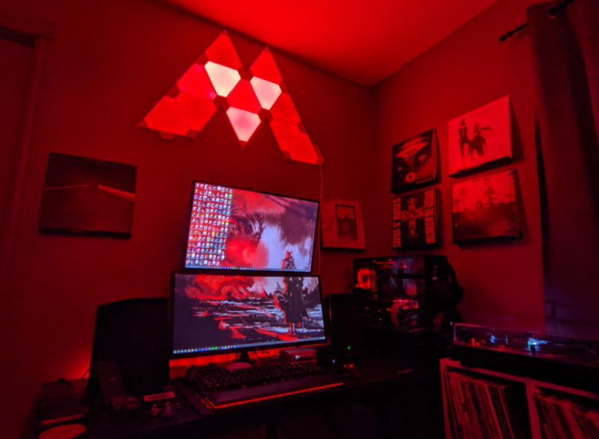Para montar um PC voltado para trabalho, é importante considerar o tipo de atividade que será realizada, como escritório, design gráfico, edição de vídeo ou programação. Veja os principais componentes recomendados:
Lembre-se de ajustar a configuração conforme o tipo de trabalho e orçamento disponível. Para tarefas mais simples, não é necessário investir em componentes de alto desempenho.
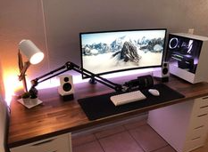Para montar um PC voltado para estudos, como navegação na internet, uso de aplicativos de escritório, videoaulas e pesquisas, é possível optar por uma configuração mais simples e econômica. Veja os principais componentes recomendados:
Lembre-se de sempre verificar a compatibilidade entre os componentes e ajustar a configuração conforme o orçamento disponível. Para estudos, não é necessário investir em peças de alto desempenho.
A memória RAM (Random Access Memory) é um componente fundamental do computador, responsável por armazenar temporariamente dados e instruções que o processador precisa acessar rapidamente enquanto executa tarefas. Ao contrário de dispositivos de armazenamento permanente, como HDs ou SSDs, a RAM é volátil: seu conteúdo é apagado quando o computador é desligado.
A quantidade e a velocidade da RAM influenciam diretamente o desempenho do sistema, especialmente em multitarefas e aplicações mais exigentes. Quanto mais memória RAM disponível, mais programas e arquivos podem ser abertos simultaneamente sem perda de desempenho.
Existem diferentes tipos de memória RAM, cada um com características próprias:
A escolha do tipo e da quantidade de RAM deve considerar o uso pretendido do computador. Para tarefas básicas, 8GB de RAM DDR4 já são suficientes. Para jogos, edição de vídeo ou multitarefa intensa, recomenda-se 16GB ou mais.
Em resumo, a memória RAM é essencial para garantir velocidade, fluidez e capacidade de executar várias tarefas ao mesmo tempo no computador. Investir em uma quantidade adequada de RAM proporciona uma experiência de uso mais rápida e eficiente.
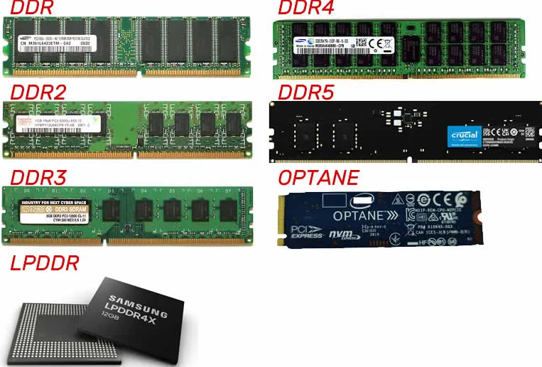SSD (Solid State Drive) é um tipo de dispositivo de armazenamento que utiliza memória flash para armazenar dados, em vez de discos magnéticos giratórios, como nos discos rígidos tradicionais (HDD). Devido à ausência de partes móveis, os SSDs oferecem várias vantagens em relação aos HDDs, incluindo maior velocidade, durabilidade e eficiência energética.
As principais vantagens dos SSDs incluem:
Existem diferentes tipos de SSDs, incluindo:
A escolha entre um SSD e um HDD depende das necessidades específicas do usuário. Para quem busca desempenho e rapidez, um SSD é a melhor opção. No entanto, para armazenamento de grandes volumes de dados a um custo mais baixo, os HDDs ainda podem ser considerados.
Em resumo, os SSDs são uma tecnologia de armazenamento avançada que oferece vantagens significativas em termos de velocidade, durabilidade e eficiência energética, tornando-os uma escolha popular para melhorar o desempenho geral dos computadores.
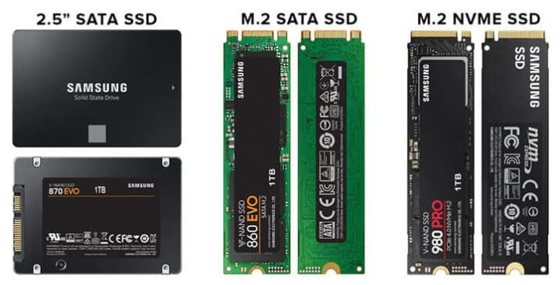O HD (Hard Disk Drive), ou disco rígido, é um dos tipos mais tradicionais de armazenamento de dados em computadores. Ele serve para guardar todos os seus arquivos, como fotos, vídeos, músicas, documentos e até o próprio sistema operacional.
O HD funciona como uma espécie de “disco” que gira em alta velocidade dentro do computador. Uma agulha lê e grava as informações nesse disco, de forma parecida com um toca-discos antigo. Quanto mais rápido o disco gira (medido em RPM), mais rápido o HD consegue acessar os arquivos.
Vantagens do HD:
Desvantagens do HD:
Resumindo: o HD é uma ótima opção para quem precisa de muito espaço para guardar arquivos e quer economizar. Porém, se você busca mais velocidade para ligar o computador e abrir programas, vale considerar um SSD, que é mais moderno e rápido.
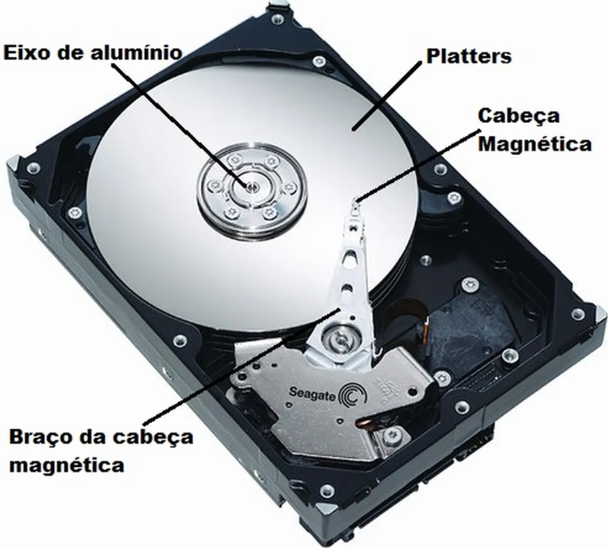O teclado é um dos periféricos mais essenciais para a interação com o computador. Ele permite a entrada de dados, comandos e textos, facilitando a comunicação entre o usuário e o sistema. Existem diversos tipos de teclados, cada um com características específicas que atendem a diferentes necessidades e preferências.
Os teclados podem ser classificados em várias categorias, incluindo:
A escolha do teclado ideal depende do uso pretendido, seja para trabalho, jogos ou uso geral. Fatores como conforto, durabilidade, layout das teclas (ABNT2, QWERTY, etc.) e recursos adicionais (teclas programáveis, descanso para as mãos) também devem ser considerados.
Em resumo, o teclado é um periférico fundamental que desempenha um papel crucial na experiência do usuário com o computador. Investir em um teclado de qualidade pode melhorar significativamente a produtividade e o conforto durante o uso diário.
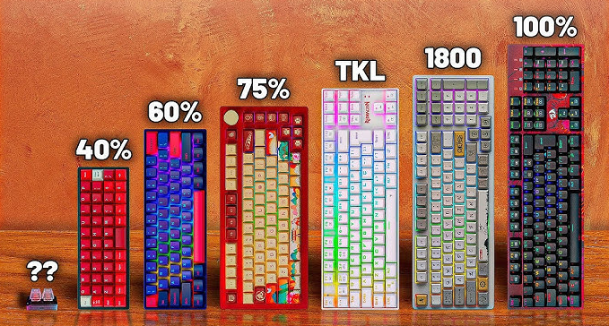O mouse é um periférico essencial para a interação com o computador, permitindo que o usuário navegue, selecione e execute comandos de forma intuitiva. Ele funciona como um dispositivo apontador, traduzindo os movimentos da mão em movimentos do cursor na tela.
Existem diversos tipos de mouses, cada um com características específicas que atendem a diferentes necessidades e preferências:
A escolha do mouse ideal depende do uso pretendido, seja para trabalho, jogos ou uso geral. Fatores como conforto, sensibilidade (DPI), número de botões e tipo de conexão também devem ser considerados.
Em resumo, o mouse é um periférico fundamental que desempenha um papel crucial na experiência do usuário com o computador. Investir em um mouse de qualidade pode melhorar significativamente a produtividade e o conforto durante o uso diário.
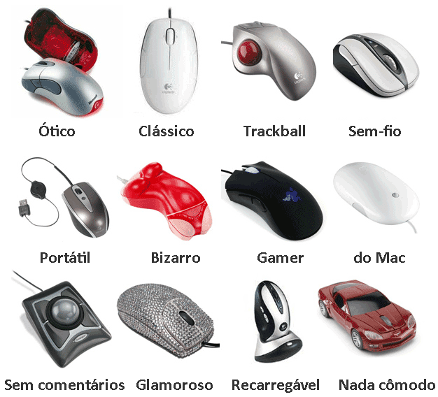O gabinete é a estrutura física que abriga e protege os componentes internos do computador, como a placa-mãe, processador, memória RAM, placa de vídeo, discos rígidos e fonte de alimentação. Além de sua função protetora, o gabinete também desempenha um papel importante na organização e no fluxo de ar, contribuindo para a refrigeração adequada dos componentes.
Existem diversos tipos de gabinetes, cada um com características específicas que atendem a diferentes necessidades e preferências:
A escolha do gabinete ideal depende do tamanho da placa-mãe, do número de componentes que serão instalados, das necessidades de refrigeração e do espaço disponível. Outros fatores a considerar incluem o design, a facilidade de montagem, a presença de filtros de poeira e a compatibilidade com sistemas de refrigeração adicionais.
Em resumo, o gabinete é um componente essencial do computador que não apenas protege os componentes internos, mas também contribui para a estética e o desempenho geral do sistema. Investir em um gabinete de qualidade pode melhorar significativamente a experiência de uso e a longevidade dos componentes.
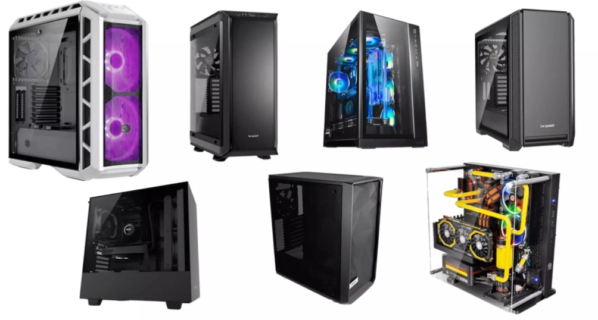A fonte de alimentação é um componente essencial em qualquer computador, responsável por converter a energia elétrica da rede em energia utilizável para os diversos componentes do sistema. Ela fornece a tensão e a corrente necessárias para o funcionamento adequado do processador, placa-mãe, discos rígidos, placas de vídeo e outros periféricos.
A fonte de alimentação desempenha várias funções importantes, incluindo:
A escolha da fonte de alimentação adequada é crucial para garantir a estabilidade e a longevidade do computador. É importante considerar a potência necessária para suportar todos os componentes do sistema, bem como a eficiência energética da fonte, que pode ser indicada por certificações como 80 Plus.
Em resumo, a fonte de alimentação é um componente vital que assegura o funcionamento correto e seguro do computador, fornecendo energia estável e adequada para todos os seus componentes.
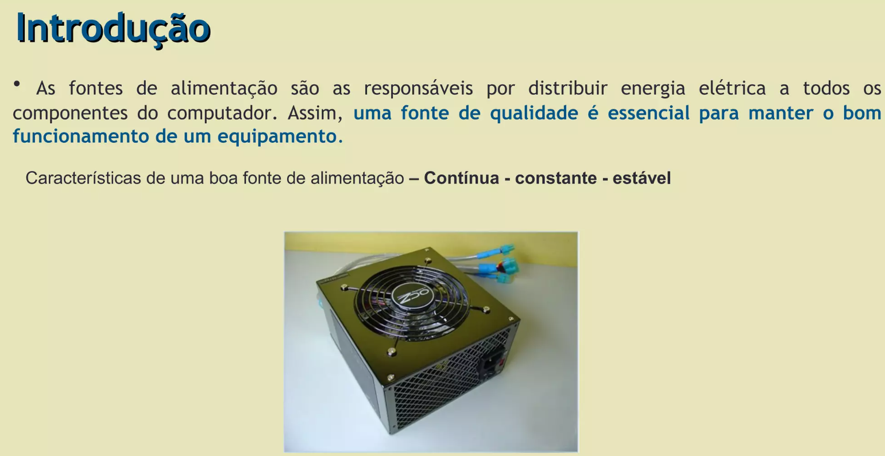As fontes de alimentação são componentes essenciais em qualquer computador, responsáveis por converter a energia elétrica da rede em energia utilizável para os diversos componentes do sistema. Existem vários tipos de fontes de alimentação, cada uma com características específicas que atendem a diferentes necessidades e orçamentos. Aqui estão os principais tipos de fontes de alimentação:
1. Fontes ATX (Advanced Technology eXtended):
2. Fontes SFX (Small Form Factor):
3. Fontes TFX (Thin Form Factor):
4. Fontes FLEX ATX (Flexible ATX):
5. Fontes modulares:
6. Fontes com certificação 80 Plus:
Em resumo, a escolha da fonte de alimentação adequada depende das necessidades específicas do sistema, incluindo a potência requerida pelos componentes, o tamanho do gabinete e a preferência por eficiência energética. Investir em uma fonte de qualidade é crucial para garantir a estabilidade e a longevidade do computador.
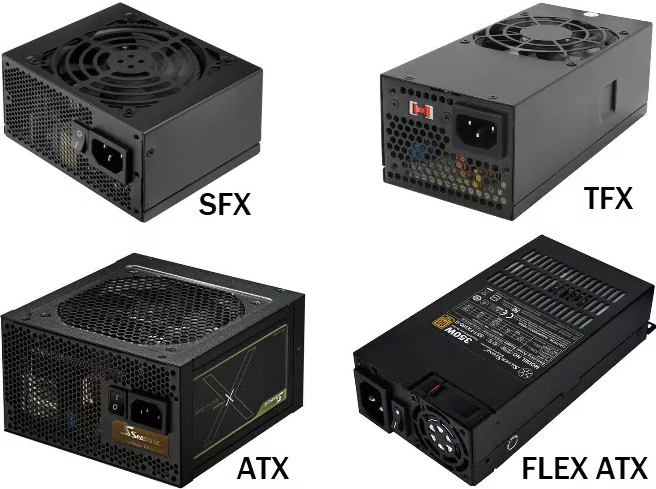O sistema operacional (SO) é o software principal que gerencia os recursos do computador e fornece uma interface para o usuário interagir com o hardware e outros softwares. Ele atua como um intermediário entre o usuário e o hardware, facilitando a execução de tarefas e a utilização de aplicativos.
As principais funções de um sistema operacional incluem:
Existem vários tipos de sistemas operacionais, cada um com suas próprias características e usos específicos. Os mais comuns incluem:
Em resumo, o sistema operacional é um componente fundamental de qualquer computador, desempenhando um papel crucial na gestão dos recursos do sistema e na facilitação da interação do usuário com o hardware e software. A escolha do sistema operacional adequado depende das necessidades e preferências individuais do usuário.
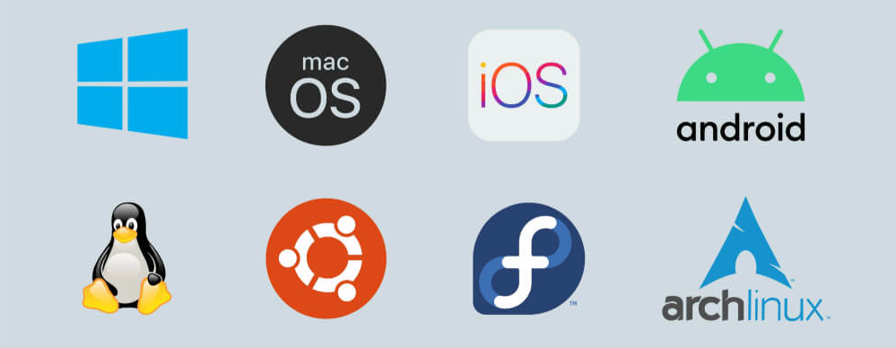O antivírus é um software essencial para a proteção do computador contra ameaças digitais, como vírus, malware, spyware e outras formas de software malicioso. Ele atua como uma barreira de defesa, monitorando o sistema em busca de atividades suspeitas e prevenindo infecções que podem comprometer a segurança dos dados e o desempenho do dispositivo.
As principais funções de um antivírus incluem:
Existem diversos antivírus disponíveis no mercado, cada um com suas próprias características e níveis de proteção. Alguns dos antivírus mais populares incluem:
Em resumo, o antivírus é uma ferramenta crucial para manter a segurança e a integridade do computador, protegendo-o contra uma ampla gama de ameaças digitais. A escolha de um antivírus confiável e a prática de hábitos seguros de navegação são essenciais para garantir a proteção contínua do sistema.